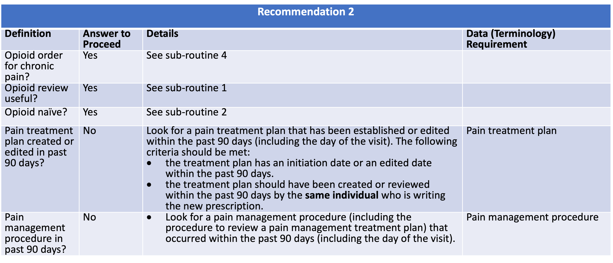
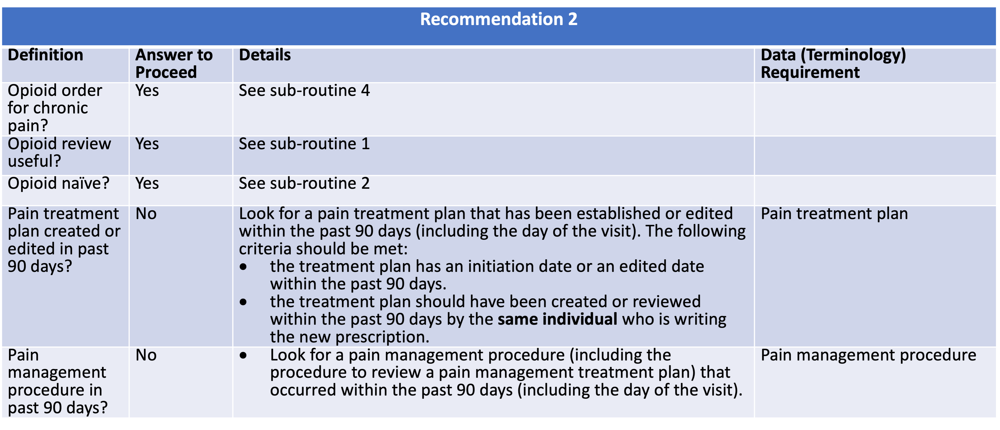

Before starting opioid therapy for chronic pain, clinicians should establish treatment goals with all patients, including realistic goals for pain and function, and should consider how opioid therapy will be discontinued if benefits do not outweigh risks. Clinicians should continue opioid therapy only if there is clinically meaningful improvement in pain and function that outweighs risks to patient safety (recommendation category: A, evidence type: 4).
| Resource | Type | Description |
|---|---|---|
| Recommendation #2 - Opioid Therapy Goals Discussion | Library | Defines the data requirements to support evaluation of recommendation #2 |
 
